Common Hoopoe
Upupa epops — Identification, habitats, breeding and occurrence in the Arab region
Upupa epops — Identification, habitats, breeding and occurrence in the Arab region
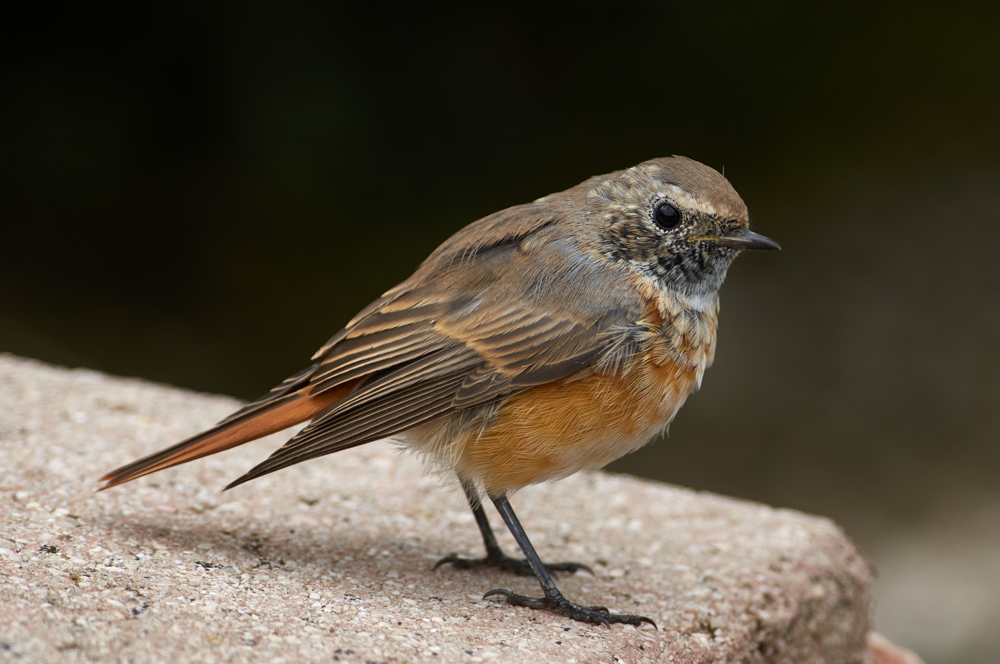
Phoenicurus phoenicurus — Identification, habitats, breeding and occurrence in the Arab region
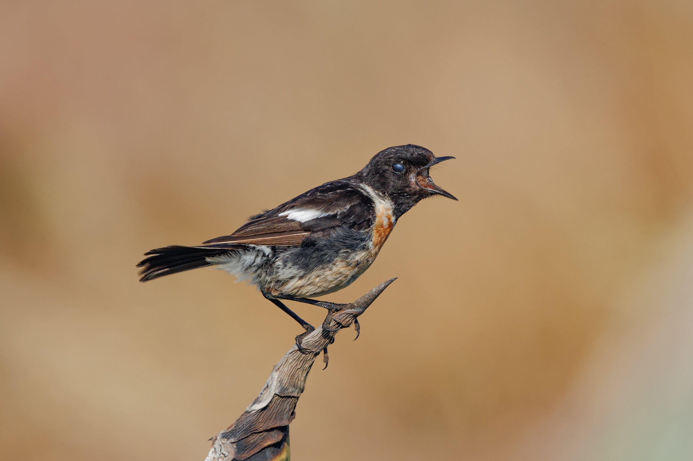
Saxicola rubicola — Identification, habitats, breeding and seasonal occurrence in the Arab region
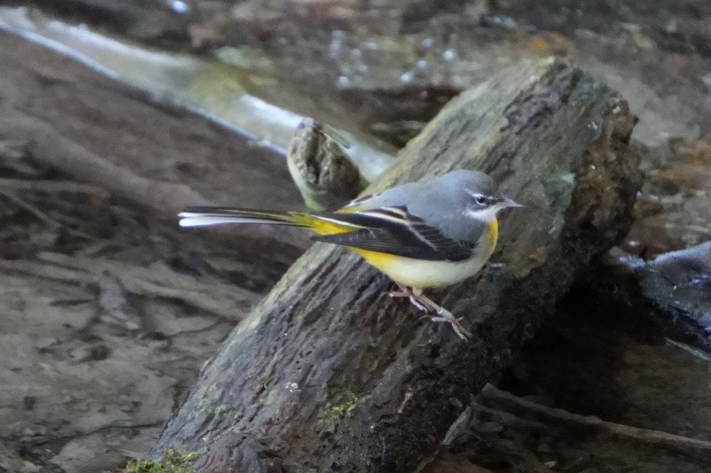
Motacilla cinerea — Identification, habitats, breeding and occurrence in the Arab region
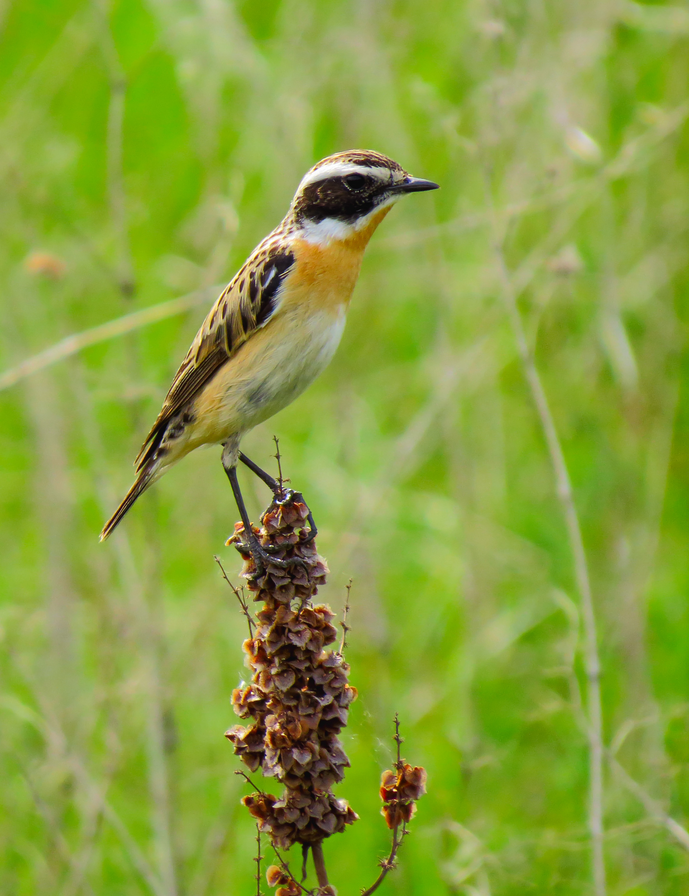
Saxicola rubetra — Identification, habitats, breeding and occurrence in the Arab region
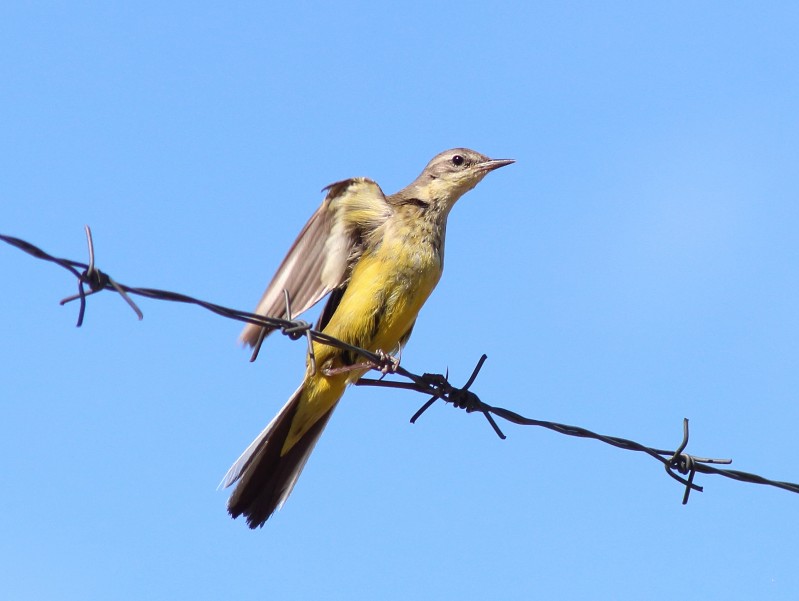
Motacilla flava — Identification, habitats, breeding and seasonal occurrence in the Arab region

Coloeus monedula — Identification, habitats, breeding and seasonal occurrence in the Arab region
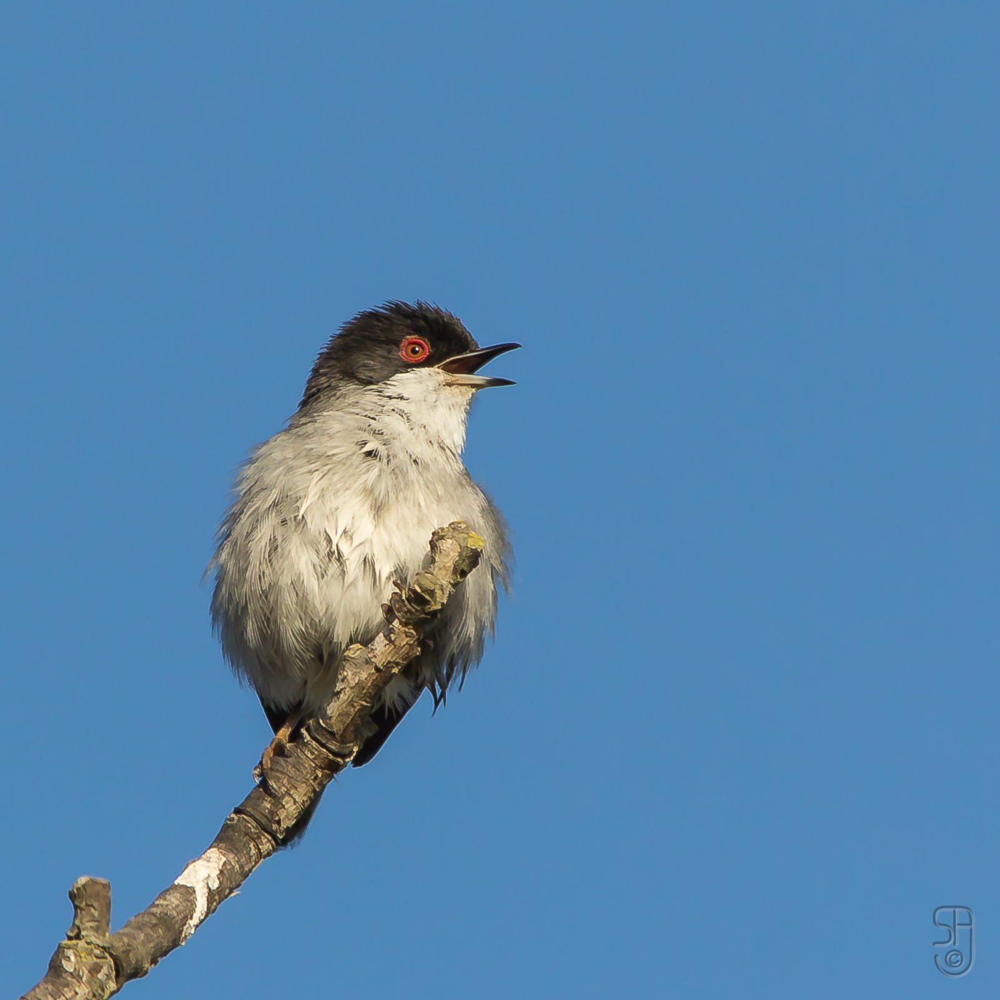
Curruca melanocephala — Identification, habitats, breeding and occurrence in the Arab region
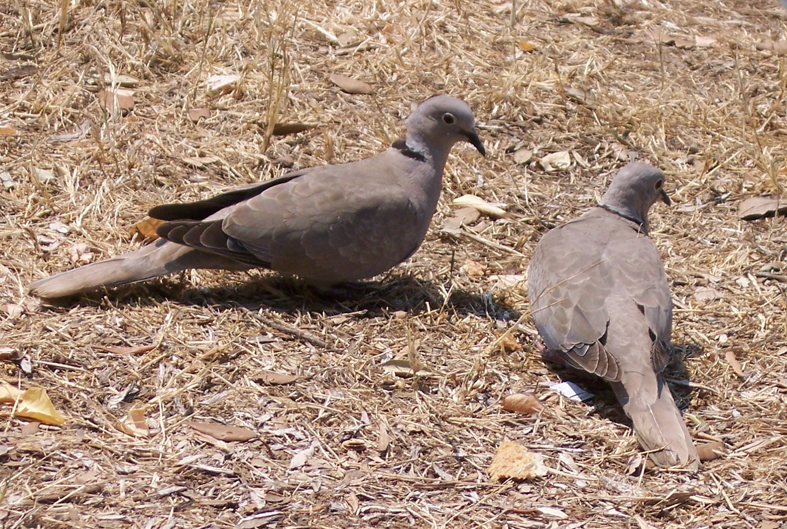
Streptopelia decaocto — Identification, habitats, breeding and occurrence in the Arab region
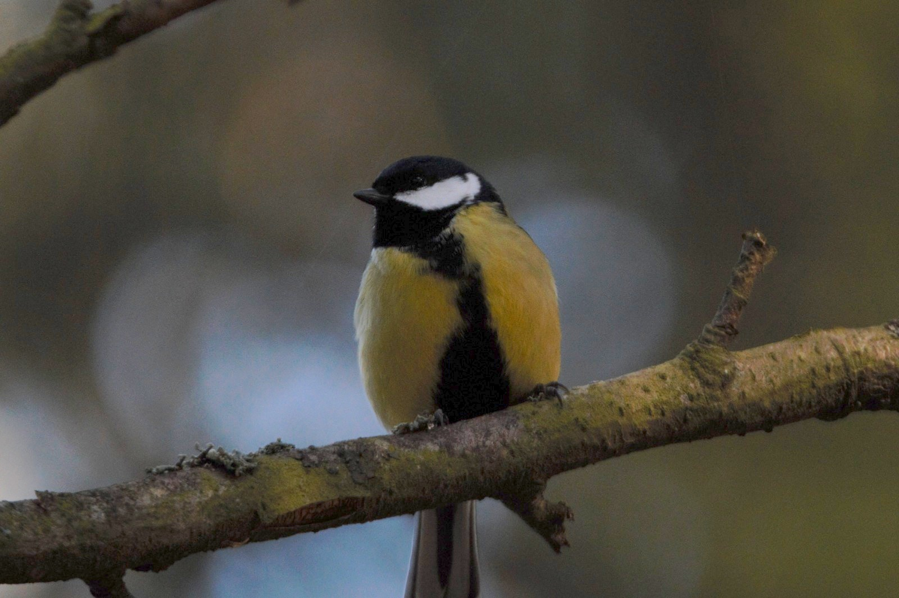
Parus major — Identification, habitats, breeding and occurrence in the Arab region
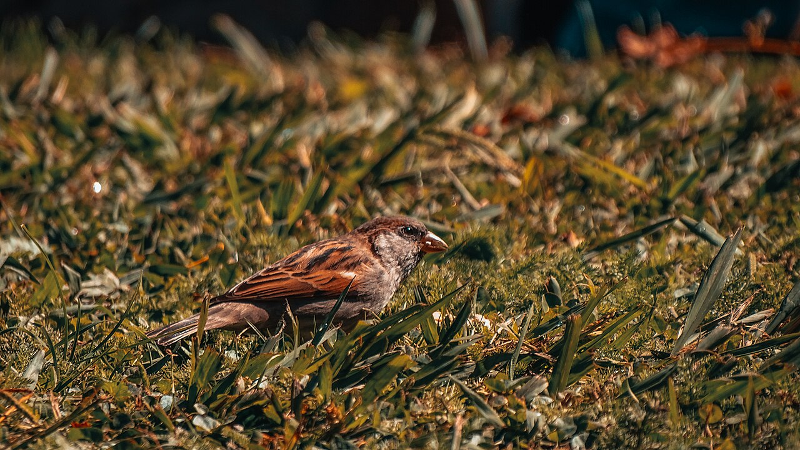
Passer domesticus — Identification, habitats, breeding and occurrence in the Arab region

Spilopelia senegalensis — Identification, habitats, breeding and occurrence in the Arab region
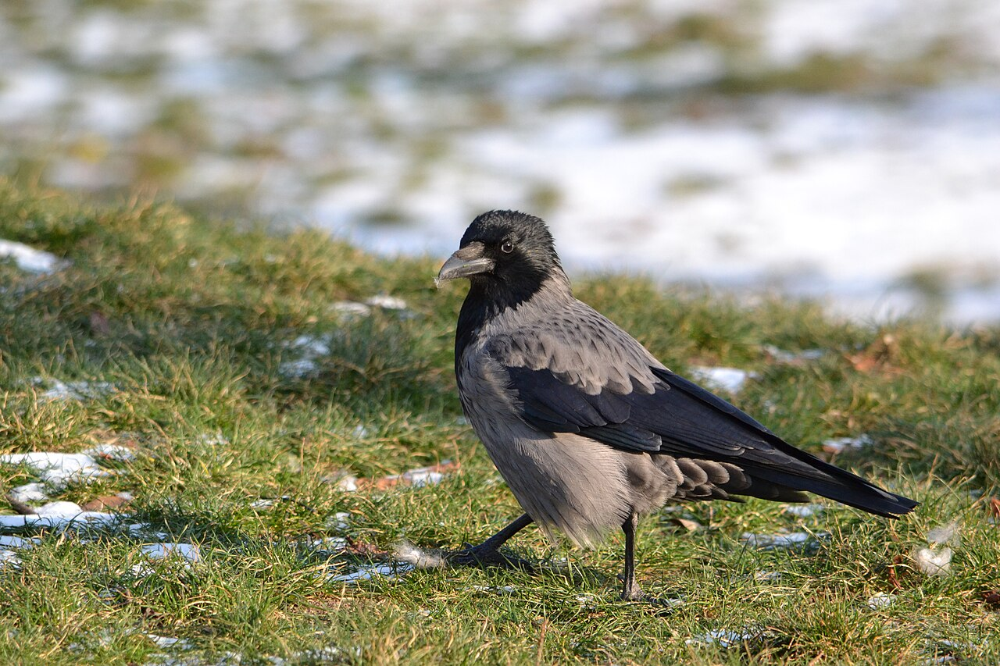
Corvus cornix — Identification, habitats, breeding and occurrence in the Arab region

Turdus merula — Identification, habitats, breeding and occurrence in the Arab region
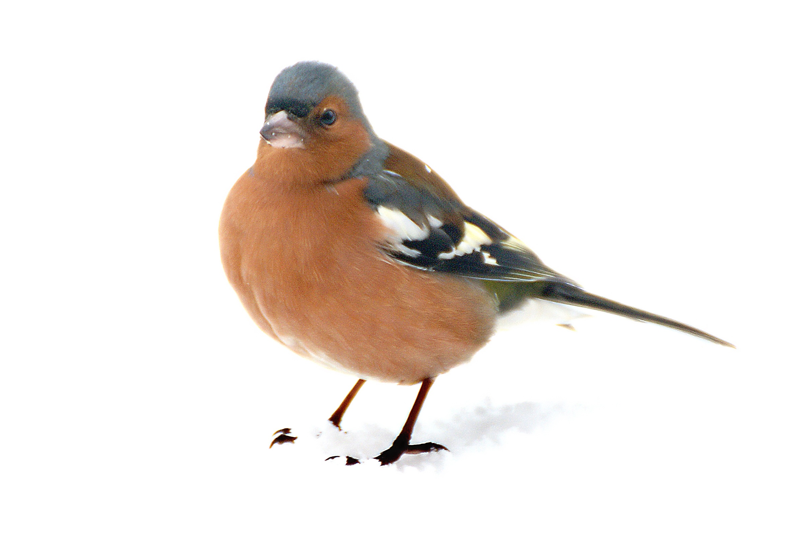
Fringilla coelebs — Identification, habitats, breeding and occurrence in the Arab region

Sturnus vulgaris — Identification, habitats, breeding and occurrence in the Arab region
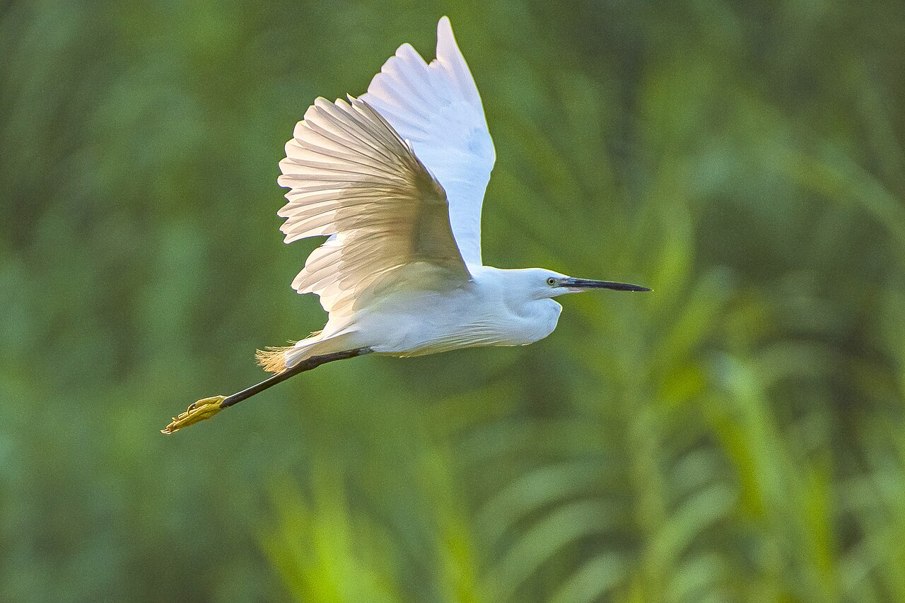
Egretta garzetta — Identification, habitats, breeding and occurrence in the Arab region

Ardea alba — Identification, habitats, breeding and occurrence in the Arab region
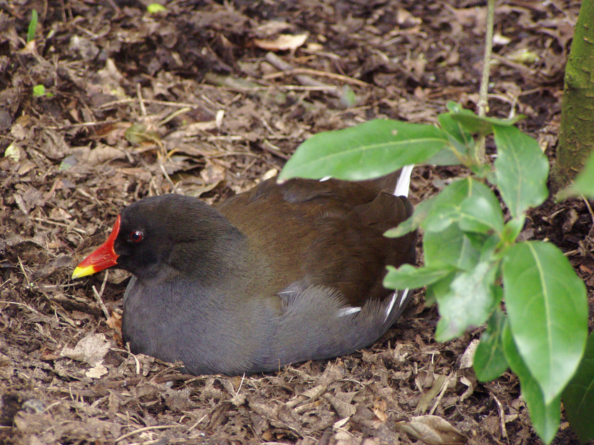
Gallinula chloropus — Identification, habitats, breeding and occurrence in the Arab region
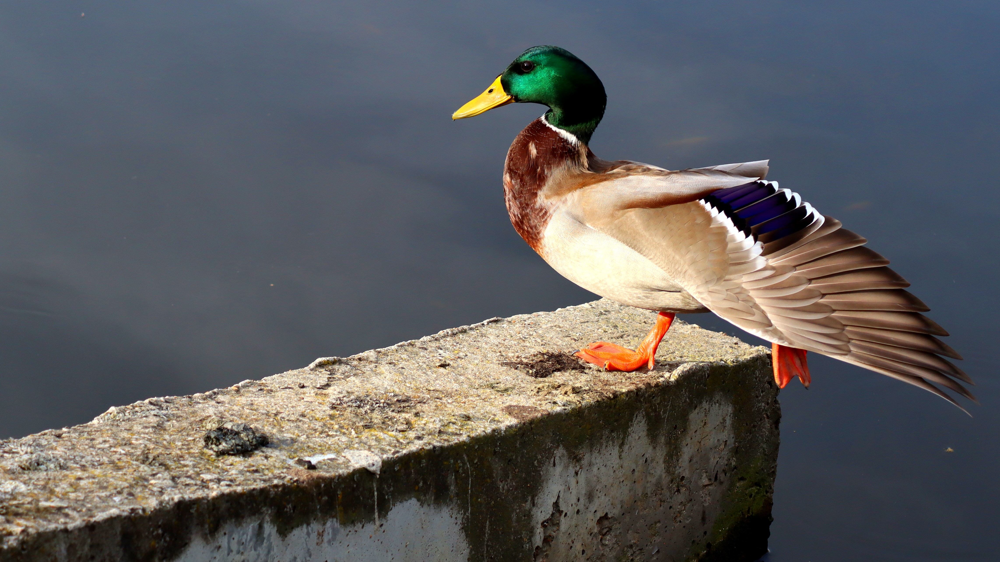
Anas platyrhynchos — Identification, habitats, breeding and occurrence in the Arab region

Mareca strepera — a dabbling duck with a white wing patch

Aythya fuligula — a diving duck on passage and wintering waters

Aythya ferina — a diving duck between migration, wintering and local breeding

Himantopus himantopus — a long-legged wader, both resident and migrant

Recurvirostra avosetta — a wader combining migration with local breeding in Arab wetlands.
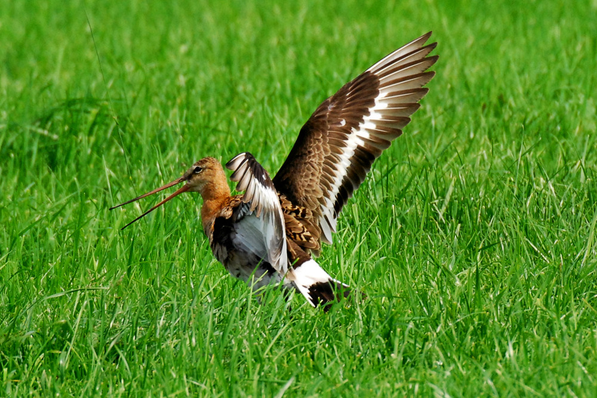
Limosa limosa — a long-billed wader between migration and wintering grounds

Its plumage changes from a black summer belly to winter grey, while its journeys connect northern breeding habitats with passage and wintering coasts.

Red legs and a white trailing edge to the wing identify a wader that reaches many Arab wetlands on migration and in winter.

From coasts to inland pools, this migrant combines greenish legs with a bill that turns slightly upwards.

A small bird turns thorns into tools for holding prey and storing food. How does it do it, and where can shrikes be seen in Arab countries?

Recognising the Eurasian Coot, its age groups and life cycle, and its Arab-world distribution as resident breeder, passage migrant and winter visitor.

Identification, Arab migration and wintering, life cycle and the taxonomic scope of Eurasian Teal within Anas crecca.

Little Grebe identification, life cycle and Arab seasonal distribution, distinguishing residence, migration and breeding.

Identification, life cycle and seasonal Arab-world distribution of Northern Shoveler, including the distinction between winter presence and rare local breeding.

A guide to Northern Pintail identification, food and life cycle, with documented seasonal occurrence from Tunisia, Egypt and Palestine to Saudi Arabia and the UAE.

Eurasian Wigeon identification, feeding and life cycle, with documented Arab-world seasonal occurrence and carefully distinguished regional migration dates.

Forked tail, pointed wings and flights over fields and water: a guide to Barn Swallow populations and seasons across the Maghreb, Levant, Egypt and Arabia.

A small wader with a distinctive teetering movement: identification, migration, winter occurrence and habitats from the Maghreb to the Levant and Arabia.

How to recognise Northern Wheatear and understand its passage, breeding and winter occurrence across the Maghreb, Levant and Arabian Peninsula.

From riverbanks and lakeshores to fields and gardens, the White Wagtail draws attention with its long tail and constant movement. Its Arab-world range…

From the Maghreb to Egypt, the Levant and the Arabian Peninsula, the Common Chiffchaff occurs on migration and in winter, with breeding documented in some…

A rusty tail quivers above a rock or old wall, followed by a short flight to the ground and a return to the perch. This movement may draw attention to a…


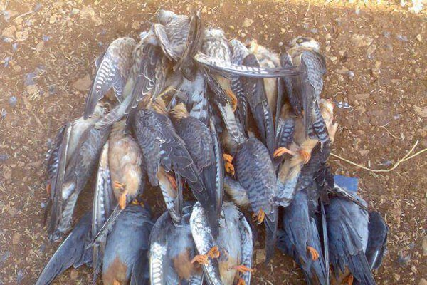